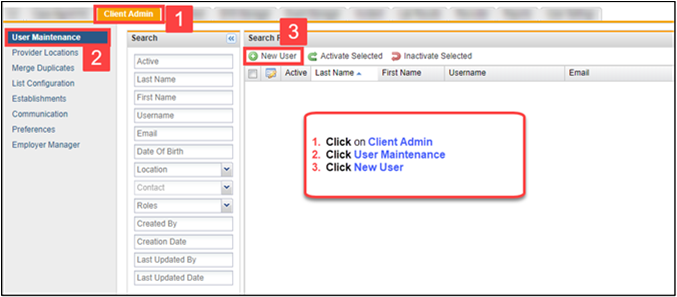
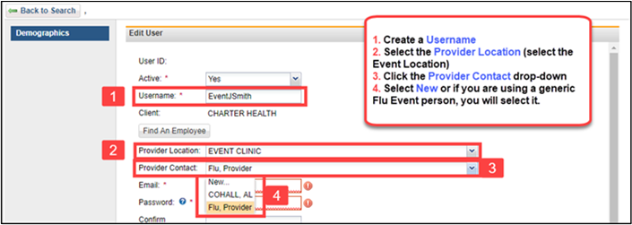
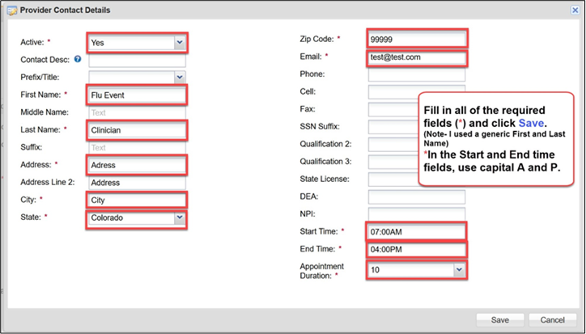
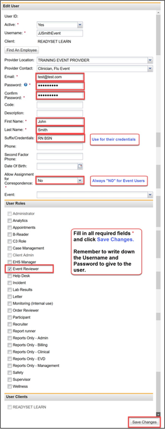
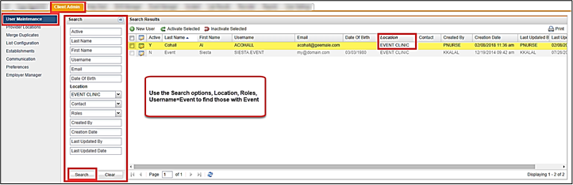

Log into ReadySet, follow these steps to add an Event User.

A suggestion for an event username would be to use the word Event, then user’s first initial, last name then the word event. For example, John Smith would be EventJSmith.


Click Save to return to the main Edit User screen and finish the process.

You can use the User Maintenance/Search to find all your Event users.
